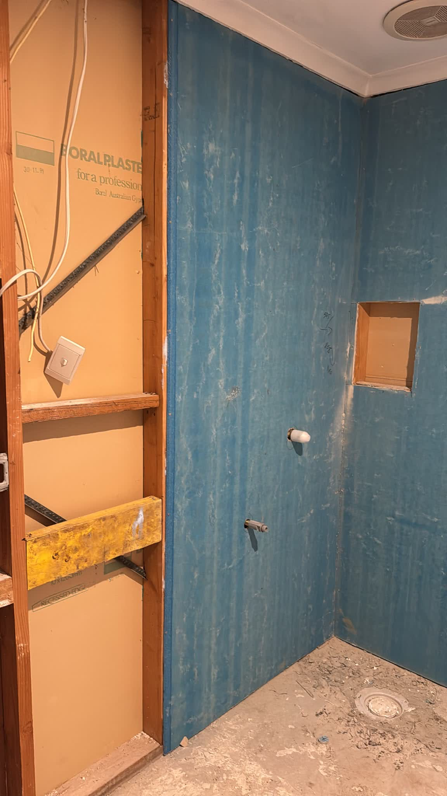

NDIS modifications
Home modifications for NDIS participants
From small changes to major structural work, we modify homes so they're safe and work for the person living there. We work alongside the participant and their occupational therapist.

What we do
- Stepless entries
- Widening doorways
- Bathroom conversions
- Ceiling hoists
- Ramps
- Accessible homes and extensions, new or retrofitted
Working with the OT
The occupational therapist works out what the participant needs. We turn that into a design and a build, check it meets the building rules, and keep the participant and the OT up to date while we work.
Some modifications need a building permit. We'll tell you at the first visit. On a job we build, an independent building surveyor issues it, because our surveyor can't be surveyor and builder on one job.

Planning an NDIS home modification?
Book a time for us to see the site, or call Ben on 0481 008 080. Send plans or photos with your enquiry and we'll come back to you with the next step.